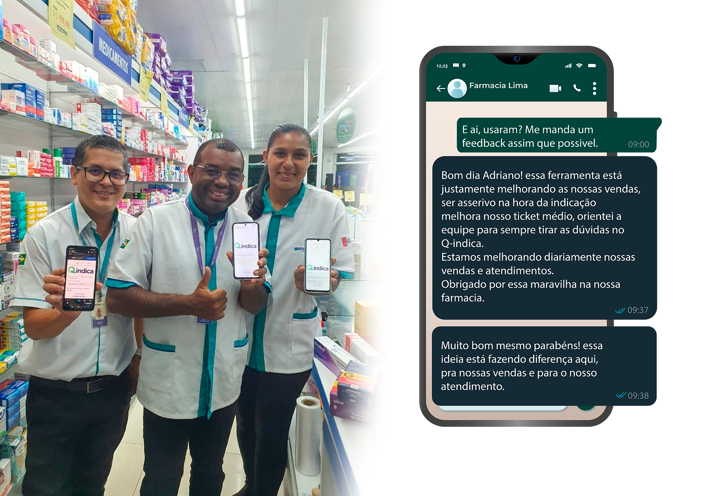

Clique no PLAY e confira o video abaixo.
Maximize o Ticket Médio de Seus Clientes
Aumente suas vendas com nossa ferramenta inteligente de sugestão de produtos. Deixe sua farmácia preparada para alcançar resultados impressionantes!
O que é o 
A ferramenta possui três pilares de recomendações para turbinar suas vendas:
Recomendações práticas e estratégicas:
Sugestões que complementam ou agregam valor ao que o cliente já está comprando, aumentando a cesta de produtos de forma inteligente.
Farol de possibilidades:
Um guia intuitivo que facilita a identificação de produtos correlacionados, simplificando o trabalho do atendente.
Aprimoramento contínuo:
Ferramenta que amplia o conhecimento dos atendentes, seja durante a venda ou em treinamentos.
O que NÃO é o
Não é uma ferramenta para substituir receitas médicas
O QIndica respeita as orientações do profissional de saúde.
Não é uma ferramenta para prescrição de medicamentos
Nosso objetivo é auxiliar, não prescrever.
Não é uma ferramenta para diagnóstico de doenças
A ferramenta foca em recomendações de produtos complementares.
O que os usuários dizem sobre o

é a solução ideal
para quem busca melhorar o atendimento e potencializar as vendas
Para o balconista iniciante:
Pare de quebar a cabeça tentando lembrar de todas as combinações possiveis. O Q-indica faz isso por você, acelerando e melhorando seu desempenho.
Para o empreendedor:
Imagine uma equipe que vende mais,com precisão aumentando o número de itens por venda, e diminuindo o risco de perdas por vencimento no estoque. O Q-indica transforma seu balcão em um verdadeiro motor de vendas inteligente
Aumente a eficiência da sua farmácia e melhore a experiência dos seus clientes JÁ!
Aproveite a Oferta Exclusiva Por Tempo Limitado!!!
Transforme suas vendas agora mesmo com o Q-indica e veja os resultados na sua farmácia!
Á Vista:
R$110,00
Plano Anual:
12x R$9,90
Assinatura anual do Q-indica por usuário
Aviso Legal: Nenhuma informação contida neste produto deve ser interpretada como uma afirmação da obtenção de resultados. Qualquer referência ao desempenho passado ou potencial de uma recomendação abordada na ferramenta não é, e não deve ser interpretada como garantia de qualquer resultado específico. Toda recomendação passa pela análise do profissional competente de farmácia de acordo com cada situação, sintoma ou problema específicos do cliente. As recomendações dessa ferramenta no tocante a medicamentos são meras sugestões, e serão liberadas mediante a análise do seu médico ou farmacêutico.